About The Return to Rome
In the fourteenth century, the heart of the Church lay far from Rome. In Avignon, the papal court had made its home, while across Italy, a young mystic from Siena found herself drawn into the affairs of popes and the Church itself.This is a timeline of the events that led up to the return of the papacy to Rome, and the role that Catherine of Siena played in it.
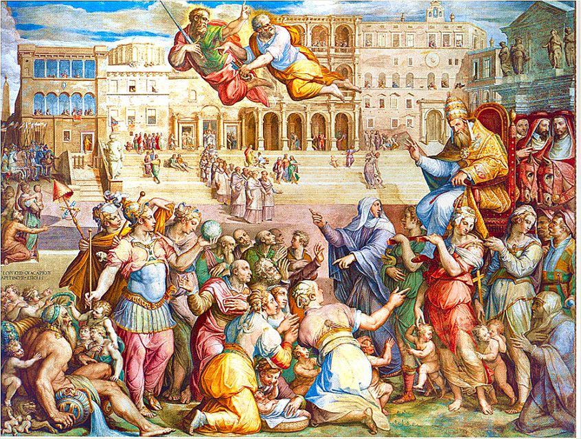
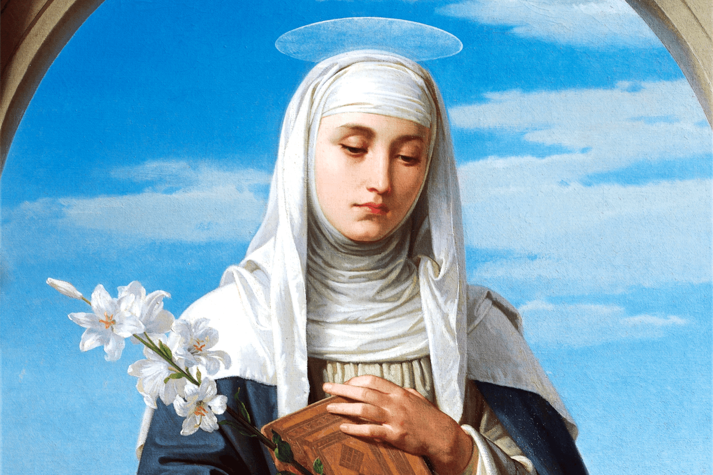
I. Who was Catherine of Siena?
Catherine Beninsca was born in Siena, Italy, on March 25, 1347, as her mother’s 25th child. At only 6 years old, she experienced her first vision of Jesus. Thus, from an early age, she felt drawn toward a life of devotion, and her faith would become the foundation of everything that followed.- She joined the Third Order of Saint Dominic at 16 and isolated herself for 3 years, only leaving for Mass and Confession.
- At 20, she had a vision of God telling her to reenter public life and devote herself to helping the sick and poor, and that is what she did for the majority of her life. She gained most of her following through this work.
- She described that she had a "mystical marriage" to Jesus Christ in a vision where He gave her a ring made of His flesh.
- After years of serving the poor and sick, in the 1370s, Catherine started traveling widely to advocate for Church reform, encourage total love for God, and engage in political diplomacy to keep Italian city-states loyal to the Pope.
- She received the stigmata in 1975.
- She died on April 29, 1380, was canonized as a Saint in 1860, and declared a Doctor of the Church in 1975.
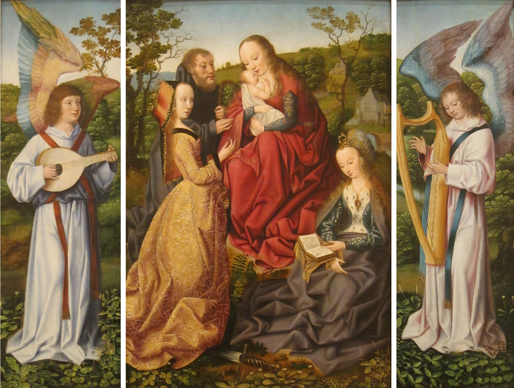
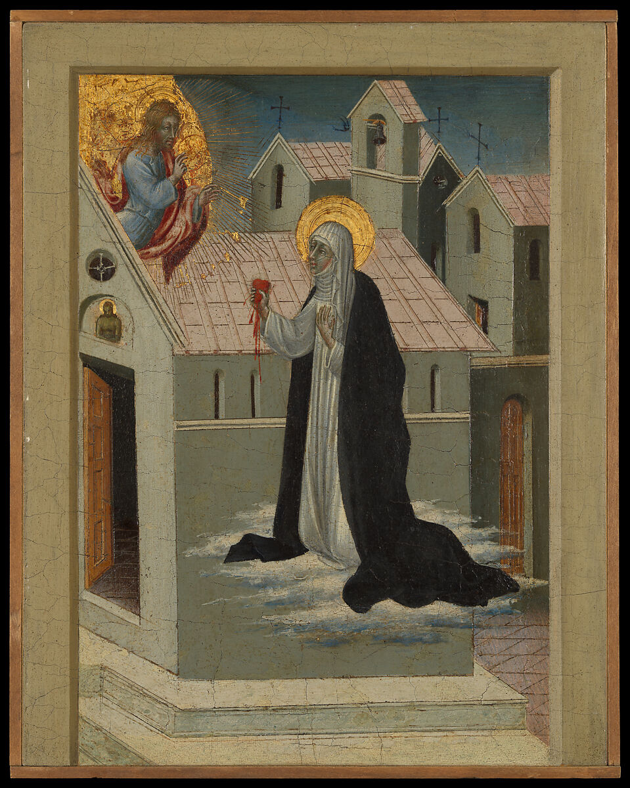
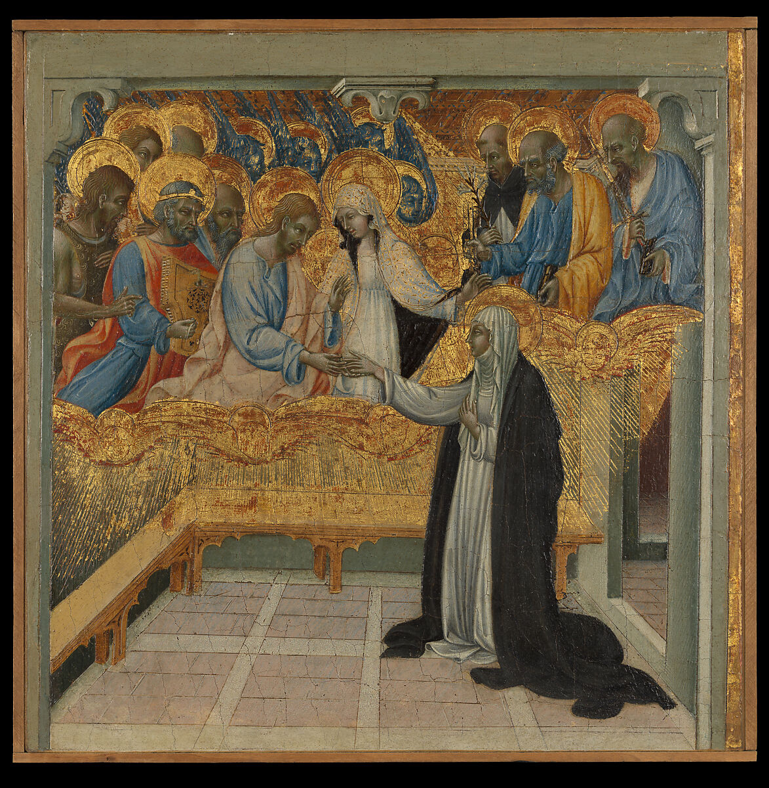
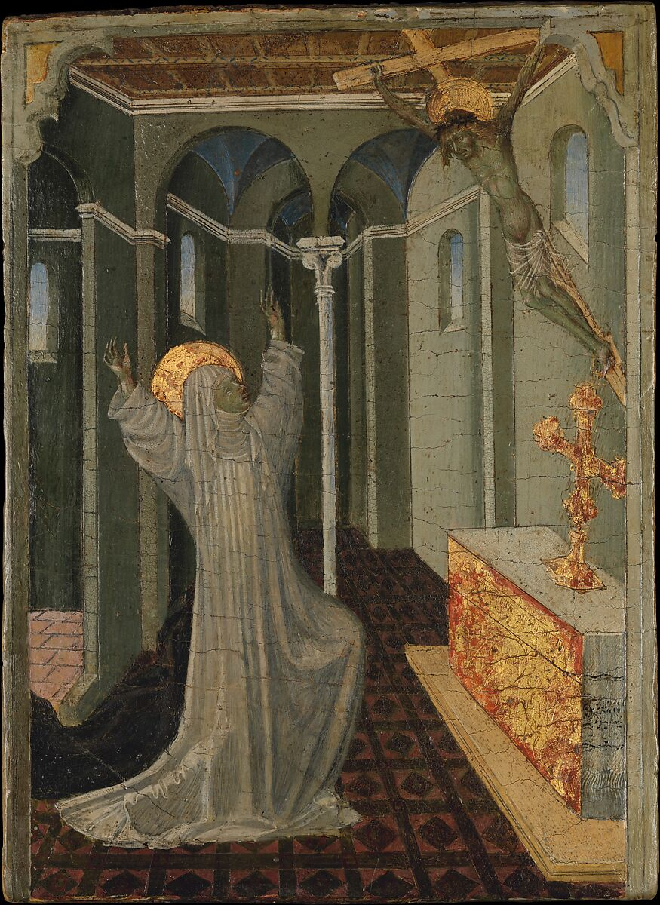
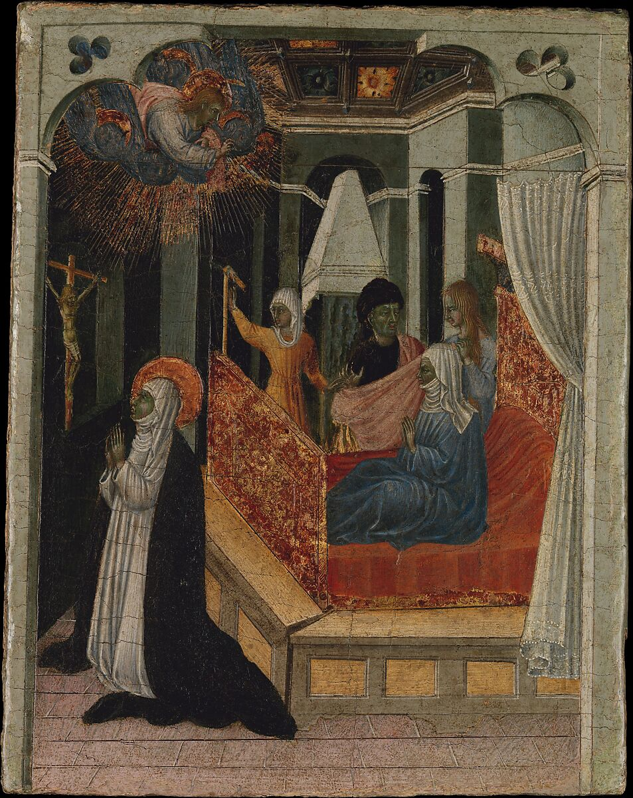
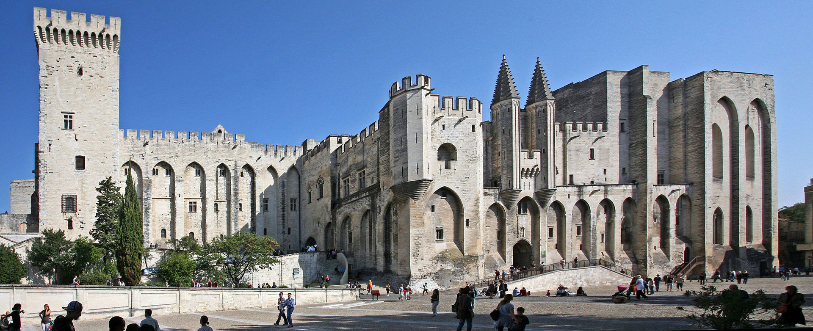
II. The Papacy in Avignon
In 1309, Pope Clement V moved the papal court from Rome to Avignon, France. During this time, the papacy was heavily influenced by French politics and culture, leading to tensions with other European powers and dissatisfaction among the faithful. The move to Avignon was seen by many as a departure from the spiritual and moral authority of the Church, and it created a sense of instability.In Italy, meanwhile, the absence of the pope carried profound consequences. City-states were administered by papal legates from France who had little understanding of the people, causing tensions to grow. The Papal States faced challenges to their authority, and resentment grew over the Church's presence in France. When Gregory XI became pope in 1370, he inherited a Church surrounded by conflict. His efforts to mediate the war between England and France brought little lasting peace. In Italy, disputes with powerful cities escalated into open warfare. By 1375, Florence had declared war on the Papacy and other Italian city-states followed.
III. The Letters
The conflict between Florence and the Papacy weighed heavily on Catherine. Believing that peace was essential to the Church’s spiritual mission, she began dictating letters to scribes in 1375, addressing not only Pope Gregory XI but also political leaders and members of her religious community. Though she did not hold an official position within the Church, her letters allowed her to speak directly to those who held the greatest influence.In her letters to Pope Gregory XI, her four appeals were:
- To return the papacy to Rome.
- For decades, the papal court had resided in Avignon, France, rather than Rome. Catherine believed that the pope should return to the city associated with the origins of the Church. She urged Gregory XI to leave Avignon and restore Rome as the center of papal authority.
- To end the war between Florence and the Papacy.
- The conflict between Florence and the Papal States had brought political and religious tensions to Italy. Catherine pleaded with Gregory to pursue peace, while also urging the Florentines to seek reconciliation. To her, continued warfare divided Christian communities and obstructed the Church’s greater mission.
- To reform the Church.
- Catherine called for spiritual renewal among the clergy and those who governed the Church. She believed that Church leaders should live with greater humility, discipline, and devotion, placing their spiritual responsibilities above worldly power and wealth. Her criticism came from a desire to see the Church live up to its religious ideals.
- Launch a crusade to the Holy Land to unite Christian rulers and promote peace.
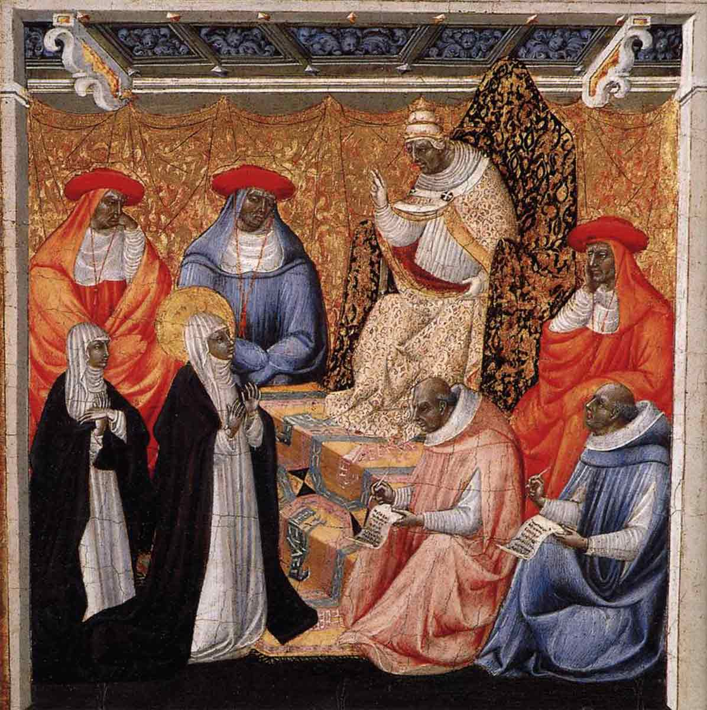
In 1376, Catherine's letters led her beyond the walls of Siena. Florence asked her to travel to Avignon as a representative and seek peace with Pope Gregory XI. In May, she traveled to Florence, and by June she had reached Avignon, where the papal court had been based for decades.
She was a laywoman without an official position in the Church, yet her reputation of holiness and her determination to speak directly to powerful leaders earned her an chance to speak to the pope. She discussed the conflict with Florence and continued to urge Pope Gregory XI to return to Rome, reform the Church, and organize a crusade.
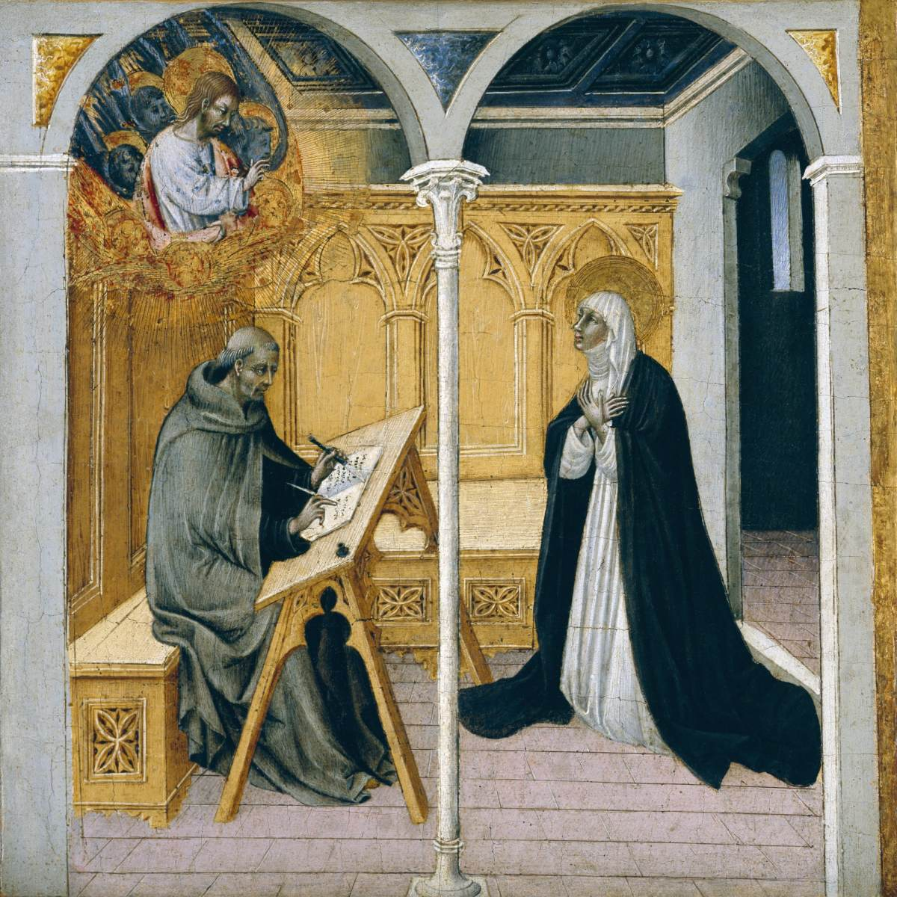
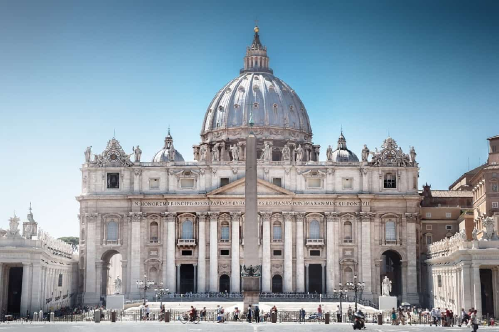
IV. Back in Rome
On September 13, 1376, Pope Gregory XI departed Avignon and began his journey toward Italy. His decision faced opposition from people who wanted the papal court to remain in France, and the journey itself was difficult. Catherine also left Avignon and traveled toward Italy by land. Their paths crossed again in Genoa, where Catherine continued to encourage Gregory to complete his journey to Rome.☆ On January 17, 1377, Gregory XI entered Rome. After nearly seventy years in which the papal court had been based primarily in Avignon, its return marked a major turning point in the history of the Church.
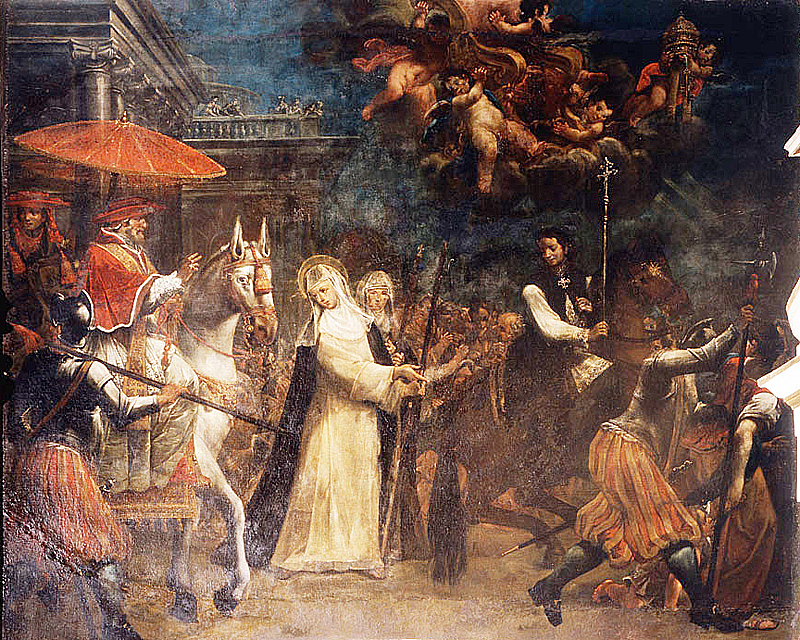
Conclusion
Catherine's story did not end when Gregory entered Rome. In 1377, she spent much of her time traveling through the countryside around Siena, encouraging religious devotion and attempting to resolve local disputes. Her work continued to bring her into contact with people beyond the religious communities in which she had first become known.She never held a formal position of political power, yet she became an influential figure in the religious and political affairs of her time. Through her letters, travels, and direct appeals to leaders, she sought to bring peace to Italy, reform the Church, and restore the papacy to Rome.
Although she could not resolve every conflict she confronted, Catherine made her voice heard in a world where women rarely held such public influence.
Illustration: Saint Catherine of Siena, Giovanni di Pietro 1510–15
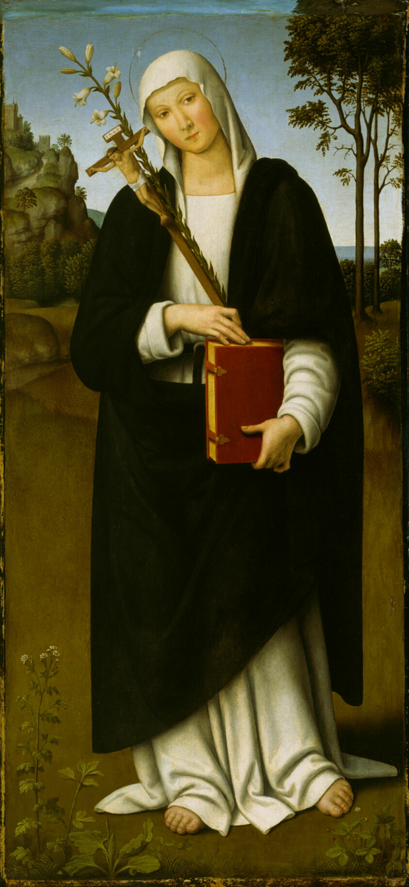